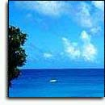

| Welcome to Fun
Caribbean[original page found here]! We specialize in
getting owned by ytcracker, the original digital
gangster. He is quite the stud with the ladies. Fun Caribbean will
instruct you how to get "babes" off the
beach and the pick up lines NOT to use.
We don't
appreciate being owned, but it's a good thing
Kevin Mitnick is on his way out. It will give
these punk kids a new martyr to shout out on
their page. Shouts to seven one nine[tap and ks]
and seekers of knowledge[ill and pulse]. Much
love to the scene and keep things
non-destructive. God bless His Kings.
As befits
heaven-on-earth, there is much to enjoy, see and
do. Beaches, boats, banks and bikinis are
Caribbean menu essentials. But the No 1
playground for the Americas also comprises
movie-set beauty, coconut-tree-clad mountains,
verdant valleys of sugar cane and bananas, and
seashore galore.
Long
desired by foreign powers, Caribbean islands come
in basic British, Dutch, Spanish, American,
French, Danish and there is even a Swedish town
named Gustavia after His Swedish Majesty at the
time.
Among
celebrities who came to stay, at least part time
are: Sean Connery, Princess Margaret, Errol
Flynn, Sir John Templeton, Arthur Hailey,
Claudette Colbert, Ernest Hemingway and Sir Noel
Coward. The latter described his beloved Jamaica
as "no place like home."
Caribbean
cities glow with glorious architecture in
communities established long before the
automobile. Capitals such as Havana and Santo
Domingo are built to human scale, just right for
walking and talking tours.
In a more
organized approach to Caribbean islands in the
sun, we offer first the largest tropical island
in the western hemisphere, Cuba; former 'veddy
British' and now independent Jamaica; The
Bahamas, northerly neighbor of the Caribbean
isles.
|